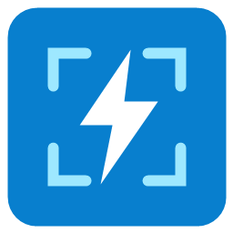

Capture. Anote. Salve.
Inicie uma captura pelo botão acima, pelo menu da bandeja ou pelo seu atalho.
A imagem permanece local. Após capturar, arraste sobre a imagem para selecionar a área.

ligthscreenshotInicie uma captura pelo botão acima, pelo menu da bandeja ou pelo seu atalho.
A imagem permanece local. Após capturar, arraste sobre a imagem para selecionar a área.